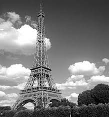

Visiter la tour Eiffel,Le monument la plus elevé du monde
Aller aux pieds de la tour Eiffel est une expérience qu'il faut avoir vécu au moins une fois dans sa vie. L'impression de grandeur que le visiteur subit est vraiment forte, mais rien ne vaut le fait de grimper jusqu'au deuxième étage. Il y a deux solutions, soit vous prenez l'escalier, soit l'ascenseur. L'escalier est un excellent choix, mais il faut quand même être capable de monter les plus de 400 marches qui mènent au premier étage (720 pour le second). L'ascenseur, si il est pratique, vous demandera un sacré effort d'attente, la queue est longue. Si vous avez opté pour l'ascenseur, sachez que vous pourrez monter ainsi jusqu'au 3e étage, à condition de changer d'ascenseur, et moyennant un supplément. A pied, vous êtes bloqué au 2e, l'escalier n'est pas prévu pour accueillir le public. Enfin, au second étage, vous êtes quand même à 116 mètres de haut, c'est déjà pas mal. Le troisième est à 276 mètres, presque au sommet.

Un haut lieu touristique
La tour Eiffel est le deuxième site payant le plus visité de France, avec 7,1 millions de visiteurs en 2011. C'est aussi un site particulièrement prisé des étrangers puisque que trois visiteurs sur quatre n'est pas Français. Si on cumule l'ensemble des visiteurs d'un site dans son histoire, la tour Eiffel est le monument qui a été le plus visité au Monde (On parle de sites payants), puisque dès sa création elle a été ouverte aux touristes et n'a cessé de l'être depuis. En France, le site gratuit le plus visité est la cathédrale Notre Dame, avec 13,6 millions de visiteurs.
Tarifs
Ces tarifs sont ceux en cours au 1er Janvier 2015. Seuls ceux indiqués sur le site officiel de la tour font foi. Vous pouvez acheter votre ticket sur place ou sur le site de la billetterie de la Tour Eiffel. Dans ce cas se sera à vous de l’imprimer ou, mieux, de le mettre sur votre téléphone portable qui vous servira de ticket d'entrée. Il n'est pas possible d’acheter un billet "accès par l’escalier" à travers le site Internet, comme indiqué ci-dessous.
par l'escalier:
En empruntant l'escalier vous accèderez au premier et second étage, en fonction de votre état de fatigue. C'est haut, c'est long, mais c'est une très bonne expérience que de monter la tour Eiffel à pieds. La sensation de hauteur est plus impressionnante que par l'ascenseur, aussi bien pour la montée que pour la descente. D'ailleurs à ce sujet vous ne pouvez pas monter à pieds et descendre par l'ascenseur. Il y a 400 marches pour accéder au 1er étage, et 720 pour le 2e, soit 320 de plus. Après, c'est fini car l'escalier montant au 3e étage est à l'usage du personnel et sert d'escalier de secours pour les personnes allant au 3e étage par l'ascenseur, il est donc interdit au public.
L'entrée des escaliers se fait par le pilier Sud, mais la sortie par n'importe quel pilier dont l'escalier est ouvert, ce que je conseille de faire parce qu'il y a toujours quelque chose de différent à voir d'un pilier à l'autre, bien qu'ils se ressemblent tous. Le tarif des billets est :
Adulte : 7,00 €
Jeune : 5,00 €
Tarif spécial : 3,00 €
A noter que la montée par l'escalier est le seul mode de visite dont le ticket ne peut pas être acheté sur Internet, il faut obligatoirement l'acheter sur place. Ce n'est pas un gros inconvénient car il n'y a jamais la queue à ce guichet, il est distinct de celui des ascenseurs.
Ascenseur second étage
Il y a trois ascenseurs pour monter au second étage de la tour Eiffel, ils sont dans les piliers Est, Nord et Ouest (Celui du Sud est réservé au client du restaurant, le "Jules Verne". Si il est plus aisé de prendre l'ascenseur pour monter, on perd en intérêt car monter à pied est très intéressant. Mais je reconnais qu'après une journée de visite à Paris, monter à pieds n'est pas évident. Les tickets d'accès aux ascenseurs sont vendus sur place, mais attendez vous à avoir de l'attente, sauf si vous venez un moment calme. Pour éviter ça vous pouvez acheter le ticket sur Internet, sur le site officiel de la tour Eiffel. Les tarifs des ascenseurs pour les 1er et 2e étages sont :
Adulte : 11,00 €
Jeune : 8,50 €
Tarif spécial : 4,00 €
Ascenseur 3e étage :
Le 3e étage de la tour est accessible à travers deux ascenseurs spéciaux, qui monte verticalement (Les autres montent de façon oblique). Là aussiil vaut mieux acheter ses tickets à l'avance sur le site Internet officiel. Les tarifs des billets sont :
Adulte : 17,00 €
Jeune (12-24) : 14,50 €
Tarif spécial : 10,00 €
Le tarif spécial s'applique pour les enfants de 4 à 11 ans, les personnes handicapées et les accompagnants des personnes handicapées. Le tarif Jeune est applicable pour les personnes âgées de 12 à 24 ans. Les enfants de 4 ans sont les invités de la tour Eiffel, ils peuvent entrer gratuitement.
Horaires
Les horaires de la tour Eiffel sont :
de mi-juin à fin septembre : 9h00 à minuit
d'octobre à mi-juin : 9h30 à 23h00
Ouverture exceptionelle de 9h00 à minuit le week-end de Pâques et pendant les vacances de printemps
L'horaire du soir est celle de la dernière montée, mais rassurez-vous : la tour continue d'être visitable pendant encore 45 minutes, soit jusqu'à 1 heure moins le quart l'été, et minuit moins le quart l'hiver. Là, le personnel vous dirigera vers les sorties. A noter également que ces horaires sont valables pour un accès par l'ascenseur, l'escalier ferme ses grilles à 18h l'hiver. L'été, ça reste ouvert normalement jusqu'à l'horaire normal.*
Les restaurants
Question restauration, la tour Eiffel dispose de trois établissements très différents, plus un bar à champagne et un bar à macarons. Si on oubli ces deux dernières propositions qui ne sont pas destinées à faire un vrai repas, il nous reste, par ordre de qualité de prestations :
Le buffet Tour Eiffel, un établissement de restauration rapide,
Le 58 Tour Eiffel, un restaurant chic,
Le Jules Verne, un restaurant étoilé tenu par Alain Ducasse.
Bien sûr, plus la prestation est élevée, plus le prix est cher... Attention donc quand vous réservez, vérifier que le menu est bien à votre portée, vous pourriez avoir de mauvaises surprises.